사회조사분석사-1급 (2004-09-05 기출문제)
1과목: 고급조사방법론 I
1. 서로 다른 복수의 사람들에 의해 입력된 자료를 SPSS Window 프로그램에서 하나로 통합하려 한다. 다음 중 바른 설명은?
- 텍스트 파일로 저장되었을 경우에 한해서 가능하다.
- 사례 수가 동일하지 않더라도 동일한 변수 목록을 가지고 있으면 가능하다.
- 사례가 같더라도 전혀 다른 변수 목록을 가진 자료간의 통합은 불가능하다.
- 두 개의 자료를 하나로 통합하는 것은 가능하나 셋이상의 자료를 통합하는 것은 불가능하다.
(정답률: 알수없음)

2. 자료편집과정에서 발견한 응답되지 않은 설문 문항에 관한 다음의 설명 중 틀린 것은?
- 응답되지 않은 설문 문항에 해당하는 변수의 값은 결측값(missing value)으로 처리한다.
- 특정 설문 문항에 응답하지 않은 사례가 많을 경우 해당 문항에 어떤 구조적인 문제가 있는지를 검토해본다.
- 대부분의 사례에서 응답하지 않은 설문 문항은 분석에서 제외하는 것이 바람직하다.
- 특정 설문 문항에 대해서 어떤 사례들은 응답한 반면 어떤 사례들은 응답하지 않은 경우, 그 설문 문항으로부터는 유용한 정보를 얻는다는 것이 불가능하다.
(정답률: 알수없음)
3. 추상적 개념을 측정가능한 형태로 정의하는 것은?
- 개념적 정의
- 조작적 정의
- 경험적 정의
- 재개념화
(정답률: 알수없음)
4. 다음 중 자료의 형태가 횡단연구에 적합한 것은?
- 우리나라의 1950년부터 2002년까지 연간 GNP 성장률
- 2003년 3월 1일 현재 우리나라 4년제 대학교의 대학교 별 재학생 수
- 2차대전 이후 전 세계에서 지출한 연도별 국방비 총액
- A씨가 취직한 이후 5년간 월별 저금액수
(정답률: 알수없음)
5. 다음 ( )에 가장 알맞은 것은?
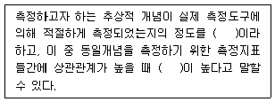
- 개념구성타당성 - 수렴적 타당성
- 내용타당성 - 수렴적 타당성
- 개념구성타당성 - 내용타당성
- 내용타당성 - 개념구성타당성
(정답률: 알수없음)
6. 어떤 학교의 교장 선생님은 학교 처벌이 학생들의 흡연을 줄이는지를 알아보기 위해 다음의 실험 방식을 취했다. 흡연 학생들을 무작위로 실험집단과 통제집단에 할당하였다. 그 다음 실험집단에 할당된 학생들은 일주일간 정학을 시키고, 통제집단에 할당된 학생들은 처벌하지 않고 그냥 훈방하였다. 이 때 사용된 실험 방식은?
- 의사실험(quasi experiment)
- 단일집단 사전사후측정(one-group pretest-posttest design)
- 집단비교설계(static-group comparison)
- 순수실험(true experiment)
(정답률: 알수없음)
7. 다음 중 조사 계획을 세울 때 포함하여야 할 사항으로 적합하지 않은 것은?
- 조사목적
- 조사일정
- 조사대상
- 조사주체
(정답률: 알수없음)
8. 조사자가 특정인의 응답을 규명할 수 있지만 본질적으로 공개하지 않을 것이라고 약속할 때 보장되는 조사윤리는?
- 공개성
- 비밀성
- 익명성
- 자발적인 참여
(정답률: 알수없음)
9. 다음 중 가장 올바른 자료처리 순서는?
- 설문 응답내용 검토 - 자료편집 - 코드부호 설정 - 코드북 작성 - 코딩
- 설문 응답내용 검토 - 코드부호 설정 - 자료편집 - 코드북 작성 - 코딩
- 코드부호 설정 - 설문 응답내용 검토 - 코드북 작성 - 코딩 - 자료편집
- 코드부호 설정 - 코드북 작성 - 설문 응답내용 검토 - 코딩 - 자료편집
(정답률: 알수없음)
10. 실험연구에서는 연구결과가 왜곡되는 것을 방지하기위해 연구대상자가 연구에 참여하기 전에 그 연구의 목적을 알려주지 않는 것이 일반적이다. 그러나 연구가 끝난 후에 그들에게 진실을 말함으로써 애초에 어쩔 수 없이 속인것을 설명해준다. 이러한 절차를 무엇이라 부르는가?
- 고지된 동의(informed consent)
- 사후설명(debriefing)
- 사후조사
- 비밀유지보장
(정답률: 알수없음)
11. 표집(sampling)에 관련된 용어 설명으로 틀린 것은?
- 표집(sampling)의 요소와 자료의 분석단위는 때로는 일치하지 않을 수 있다.
- 모집단이란 표본을 통해 대표하려는 전체를 말한다.
- 연구모집단은 표본이 실제 추출되는 요소들의 집합을 말한다.
- 표집틀은 모집단과 동일한 표현이다.
(정답률: 알수없음)
12. 어떤 백화점 출입구에서 가전제품에 대한 만족도 조사를 하고 있다. 이런 조사는 다음 중 어느 것에 해당되는가?
- 무작위표본(random sample) 조사
- 할당표본(quota sample) 조사
- 계통표본(systematic sample) 조사
- 가용표본(available sample) 조사
(정답률: 알수없음)
13. A 평생교육원에 다니고 있는 교육생들을 대상으로 질문지를 이용하여 전수조사를 하려고 한다. 연령, 성별, 직업등과 같은 인구통계적 특성에 대한 질문의 위치로 가장 바람직한 곳은?
- 인사말과 지시문 사이
- 질문지의 시작 위치
- 질문지의 중간 위치
- 질문지의 맨 뒤
(정답률: 알수없음)
14. 측정과 척도에 관한 다음의 서술 내용 중 틀린 것은?
- 측정이란 사물이나 사건과 같은 목적물(objects)의 속성에 가치(value)를 부여하는 것이다.
- 척도란 측정대상에 부여하는 가치들의 체계이다.
- 측정에 있어서 체계적 오류(systematic error)는 신뢰도와 관련이 있고 무작위 오류(random error)는 타당도와 관련이 있다.
- 일반적으로 측정의 형태(types of scale)와 척도의 수준(levels of measurement)은 같은 의미로 사용된다.
(정답률: 알수없음)
15. 교체패널조사(Rotating Panel Survey)가 비교체패널조사 (Nonrotating Panel Survey)에 비해 가지는 단점은?
- 패널 손실(panel loss)
- 모집단 특성 변화의 파악
- 개인별 통시적 합계자료 (aggregate data for individuals across time)
- 패널 추적 비용
(정답률: 알수없음)
16. 다음 중 패널연구와 동류집단연구 간의 공통점은?
- 표집의 회수
- 독립변인에 대한 종속변인의 변화와 총체적 변화에 대한 정보 동시 습득 가능
- 분석단위
- 동일한 집단을 따라가며 조사
(정답률: 알수없음)
17. 표본설계과정의 순서로 맞는 것은?
- 표본프레임의 결정->표본추출방법의 선정->모집단의 확정->표본크기의 결정->표본추출
- 표본프레임의 결정->모집단의 확정->표본추출방법의 선정->표본크기의 결정->표본추출
- 모집단의 확정->표본프레임의 결정->표본추출방법의 선정->표본크기의 결정->표본추출
- 모집단의 확정->표본추출방법의 선정->표본프레임의 결정->표본크기의 결정->표본추출
(정답률: 알수없음)
18. 다음 중 연구설계에 관한 설명 중 옳은 것은?
- 실험적 설계(experimental design)란 실험실에서 하는 연구설계만을 의미한다.
- 전실험적 설계(pre-experimental design)란 실험 설계 전에 실시하는 설계를 의미한다.
- 준실험적 설계(quasi-experimental design)란 실험적 설계와 전실험적 설계의 중간적인 성격을 갖는다.
- 실험적 설계(experimental design)는 자연과학보다는 사회과학에서 더 많이 쓰이고 있다.
(정답률: 알수없음)
19. 다음은 무엇에 관한 설명인가?
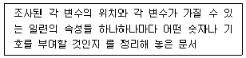
- 설문지(questionnaire)
- 이전용지(transfer sheet)
- 코드용지(code sheet)
- 코드북(codebook)
(정답률: 알수없음)
20. 횡단연구(cross-sectional study)에 대한 설명으로 타당하지 않은 것은?
- 실험적 개입을 통한 차이가 아니라 이미 존재하는 집단간 차이가 연구의 중심이 된다.
- 인과관계(causal relationship) 설정에서 사전적 추리(a priori reasoning) 보다 사후적 추리(ad hoc reasoning)가 적합하다.
- 제 3의 변수에 대한 통제는 자료 수집 단계에서 보다 자료 분석 단계에서 통계적 절차를 통해 시도된다.
- 성(gender), 인종과 같은 고정된 변수를 독립변수로 사용하면 인과관계의 방향을 설정할 수 있다.
(정답률: 알수없음)
21. 질문지의 문항을 배열하는 과정에서 고려해야 할 내용이 아닌 것은?
- 자기기입식 설문지의 경우 인적 사항(인구사회학적 자료)에 대한 질문은 설문지의 후반부에 배열하는 것이 좋다.
- 면접 설문조사의 경우 인적 사항(인구사회학적 자료)를 설문지의 앞부분에 배열하는 것이 효과적이다.
- 자기기입식 설문지의 경우 심각하게 고려하여 응답하여야 하는 질문은 앞부분에 배열하는 것이 좋다.
- 첫번째 질문은 응답자의 흥미를 유발할 수 있는 것이 어야 한다.
(정답률: 알수없음)
22. 조사자의 조사관리에 관한 설명 중 타당하지 않은 것은?
- 조사자는 조사결과를 공표할 때 모집단과 표집틀을 밝힌다.
- 조사자는 연구과제에 적합한 조사기법과 분석방법을 사용한다.
- 조사의 타당성 검토는 조사대상자의 익명성 보호를 제한한다.
- 공표된 조사결과에 대한 일반인의 해석에 대해 조사자는 관여하지 않는다.
(정답률: 알수없음)
23. 다음은 무슨 오류에 대한 설명인가?
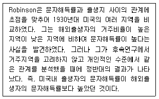
- 개체주의적 오류(individualistic fallacy)
- 생태적 오류(ecological fallacy)
- 환원주의적 오류(reductionism)
- 변수선정과 관련된 환원주의적 오류
(정답률: 알수없음)
24. 다음 중 계통표집(stratified sampling)이 무작위표집(random sampling)에 비해 가진 장점이 아닌 것은?
- 원칙적으로 무작위표집에 비하여 표본추출이 용이하고 편리하다.
- 명단이 어떠한 유형을 가지고 배열된 경우 특히 편향되지 않는 표본을 얻을 수 있다.
- 적절한 보조변수를 이용하면 모집단의 구성비율을 잘 반영하는 표본을 얻을 수 있다.
- 순서 모집단(ordered population)의 경우 추정량의 분산이 무작위표집보다 더 작아져서 효율적이다.
(정답률: 알수없음)
25. 우리나라 현행 인구센서스의 특징에 해당되지 않는 것은?
- 각종 경상조사 표본틀(Sampling frame)의 기초자료로 활용
- 외국인을 조사대상에서 제외
- 5년 주기로 시행
- 표본조사 병행
(정답률: 알수없음)
26. 가장 이상적인 형태의 표본프레임에 해당되는 것은?
- 표본프레임이 모집단과 정확히 일치하는 경우
- 표본프레임이 모집단 내에 포함되는 경우
- 모집단이 표본프레임 내에 포함되는 경우
- 표본프레임이 모집단과 일부분만 일치하는 경우
(정답률: 알수없음)
27. 질문지를 작성한 후 시행되는 사전조사(pre-test)와 관계가 없는 것은?
- 본조사를 위해 표집된 표본 가운데 일정한 수의 응답자를 조사대상으로 삼는다.
- 본조사와 면접방식이나 진행절차를 동일하게 한다.
- 응답자들이 잘못 이해하는 질문이 있는가에 유의한다.
- 응답범주에 제시되지 않은 응답을 기록해 둔다.
(정답률: 알수없음)
28. 내용분석의 장점으로 타당하지 않은 것은 ?
- 연구대상의 반응성(reactivity) 문제를 해결하는데 도움이 된다.
- 주로 단기적 과정에 국한된 자료를 대상으로 한다.
- 면접설문조사에 비하여 시간과 돈이 적게 든다.
- 설문조사나 현지조사 등에 비해 재조사를 쉽게 할 수 있다.
(정답률: 알수없음)
29. 군집표본추출을 사용하게 될 때, 각 소집단의 집단 내 분포가 지녀야 할 특성으로 가장 바람직한 것은?
- 최대한 동질적이어야 한다.
- 최대한 이질적이어야 한다.
- 집단 내의 분포는 동질적이더라도 집단간 차이는 커야 한다.
- 모집단이 지닌 특성의 분포와 정확히 일치하여야 한다.
(정답률: 알수없음)
30. 누진세에 대한 태도와 소득 수준 사이에 통계적으로 유의 미한 관계가 나타나지 않다가 교육수준을 통제하자 유의미한 상관관계가 나타났다. 여기에서 교육수준과 같은 검정요인(test factor)을 무엇이라 하는가?
- 매개변수
- 구성변수
- 억제변수
- 왜곡변수
(정답률: 알수없음)
2과목: 고급조사방법론 II
31. 전수조사(census)와 표본조사 사이의 관계에 대한 설명으로 틀린 것은?
- 전수조사가 가능해도 비용과 시간을 고려할 때 표본조사가 효율적인 경우가 많다.
- 표본조사는 전수조사의 질을 향상시키는데 사용될 수 있다.
- 도서지방이나 산간지방에 대한 정보는 전수조사보다 표본조사를 통해 얻을 수 있다.
- 일정한 시점에서 신제품광고에 대한 인지도 조사는 표본조사로 신속하게 실시하는 것이 좋다.
(정답률: 알수없음)
32. 과학적 방법론에 관한 포퍼(Karl Popper)의 이론과 거리가 먼 것은?
- 반증(falsification) 가능성
- 인간의 오류 가능성 중시
- 귀납적 이론 구성 전략
- 비판적 합리주의
(정답률: 알수없음)
33. 과학적 연구의 기초개념에 대한 설명으로 틀린 것은?
- 개념(concept)은 가설과 이론의 구성요소로 보편적인 관념 안에서 특정현상을 나타내는 추상적 표현이다.
- 변수(variable)는 실증적인 검증과정에서 개념을 측정 가능한 형태로 변화시킨 것이다.
- 패러다임(paradigm)은 두개 이상의 변수들간의 관계에 대한 진술이며, 아직 검증되지 않은 사실이다.
- 이론(theory)이란 어떤 특정현상을 논리적으로 설명하고 예측하려는 진술을 말한다.
(정답률: 알수없음)
34. 종단연구(longitudinal study)에 대한 설명으로 옳지 않은 것은?
- 횡단연구와는 대조적으로 동일한 현상을 긴 기간동안 관찰할 수 있도록 설계된다.
- 종단연구에는 추세연구, 코호트연구, 패널연구 등이 있다.
- 대규모 조사에 종단연구는 더욱 힘들 수 있다.
- 직접적 관찰과 심층면접을 병행하는 현장조사는 종단 연구가 아니다.
(정답률: 알수없음)
35. 자료입력의 방법에 대한 설명으로 적절하지 않는 것은?
- 여백코딩(edge-coding)은 별도의 코드용지없이 설문지 등의 가장자리 여백에 코딩내용을 기록하였다가 이를 보고 자료를 입력하는 방식이다.
- 최근에는 자료를 코딩하여 코딩된 내용을 전환용지(transfer sheet)에 옮겨 기록하는 방법이 널리 쓰인다.
- 설문지의 자료를 바로 컴퓨터에 직접 입력할 수 있어 시간적 경제적으로 효율성이 높다.
- 옵티컬 스캔 용지 코딩방법은 특수 코드용지에 연필로 칠하여 이를 스캐너를 통하여 읽어들이고 자료파일을 만드는 방법으로 대량의 정보처리에 유용하다.
(정답률: 알수없음)
36. 실험설계의 타당성을 저해하는 외생변수 중 실험대상으로측정하고자 하는 결과변수의 수준이 매우 낮은 집단을 선정하였을 때 나타나기 쉬운 것은?
- 성숙효과
- 시험효과
- 실험변수의 확산
- 통계적 회귀
(정답률: 알수없음)
37. 인터넷 조사에는 패널의 PC에서 로그데이타를 수집하는패널로그 측정방식(Audience Centric Measurement)과 웹서버 단에서 로그를 분석하는 서버로그 측정방식(Site Centric Measurement)이 있다. 패널로그 측정방식이 서버로그 측정방식에 비해 갖는 장점이 아닌 것은?
- 인구통계적 분석 용이
- 방문자 적은 사이트에 대한 분석 용이
- 동일한 기준으로 다양한 사이트 분석 가능
- 시간이 적게 듦
(정답률: 알수없음)
38. 분석단위의 요건이 아닌 것은?
- 분석단위는 측정가능해야 한다.
- 분석단위는 연구주제의 목적에 적합해야 한다.
- 분석단위는 시간이나 장소의 비교가 가능해야 한다.
- 사회과학의 경우 분석단위는 개인만이 될 수 있다.
(정답률: 알수없음)
39. 다음 중 개인이 분석 단위가 되는 연구는?
- 무역량과 1인당 GNP간의 상관관계에 관한 연구
- 천주교 신자의 비율과 인구 100명당 자살율과의 상관관계에 관한 연구
- 주당 음주 횟수와 성적간의 상관관계에 관한 연구
- 국민 1인당 연 담배 소비량과 국민 1인당 GNP간의 상관관계에 관한 연구
(정답률: 알수없음)
40. 실험에서 X(독립변인)의 실험조작이 Y(종속변인)에 실제로 변화를 일으킨 정도를 측정하는 척도는?
- 신뢰도
- 내적 타당도
- 외적 타당도
- 예측빈도
(정답률: 알수없음)
41. 기술조사(descriptive research)의 특성이 아닌 것은?
- 변수의 분포와 특성 조사
- 변수들간의 관련성 파악
- 서베이를 통한 자료 수집
- 인과관계의 규명
(정답률: 알수없음)
42. 다음의 측정과 관련된 설명 중 가장 옳은 것은?
- 신뢰도와 타당도간의 관계는 대칭적이다
- 측정의 체계적 오차는 신뢰도와 관계된다
- 측정의 신뢰도 측정방법으로 요인분석법이 활용된다
- 측정항목을 늘리면 신뢰도는 높아진다
(정답률: 알수없음)
43. 다음 두 종류의 실험설계에 관한 내용 중 틀린 것은?
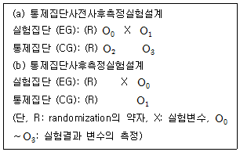
- (a)와 (b) 모두는 실험집단과 통제집단에 대한 무작위화를 통해 외생변수가 두 집단에 동일하게 작용할 것이라는 가정을 전제로 하고 있다.
- (a)는 (b)에 비해 시험효과(testing effect)를 통제하는데 더 효과적이다.
- (a)의 실험효과는 (O1-O0)-(O3-O2)이고 (b)의 실험효과는 (O0-O1)이다.
- (a)와 (b)를 합한 것이 솔로몬 4집단실험설계이다.
(정답률: 알수없음)
44. 표본의 크기와 관련된 설명 중 틀린 것은?
- 표본의 크기는 분석할 변수 및 범주와 관련이 없다
- 표본의 크기가 증가하면 표본오차는 감소한다
- 표본의 크기는 모집단의 성격에 따라 영향을 받는다
- 표본의 크기는 모수치의 추정시 신뢰수준의 정도에 영향을 준다.
(정답률: 알수없음)
45. 전화번호부, 방송연감이나 기타 명부를 토대로 표본을 추출할 때 유리한 표본추출방법은?
- 단순무작위 표본추출
- 계통표본추출
- 층화표본추출
- 군집표본추출
(정답률: 알수없음)
46. 인과관계에 대한 설명으로 옳지 않은 것은?
- 한 사건의 영향으로 다른 사건이 발생하는 것을 의미한다.
- 인과관계의 추론은 과학적 방법으로 수집된 정보를 바탕으로 이루어진다.
- 과학이란 원인과 결과간의 관계를 규명하는 활동이라할 수 있다.
- 사회과학은 순환론적 인과관계를 규명하고자 한다.
(정답률: 알수없음)
47. 리커트 척도(Likert scales) 구성과 관련한 설명으로 틀린 것은?
- 설문문항은 조사하고자 하는 대상 또는 사회현상과 관련한 여러 진술들로 구성한다.
- 각 문항별 응답범주는 상호 대칭되는 명백한 서열형태의 3점, 4점, 5점 척도로 적절하게 설정한다.
- 각 문항설정이 타당하다면, 모든 문항들은 상호간에 높은 상관성이 존재하여야 한다.
- 각 설문문항들 사이에는 서열순위를 설정해야 한다.
(정답률: 알수없음)
48. 내용분석(content analysis)의 장점이 아닌 것은?
- 서베이 조사에 비해 시간과 비용 측면에서 경제적이다.
- 다른 조사방법에 비해 연구계획을 부분적으로 수정하고 반복하는 것이 용이하다.
- 이미 기록된 내용을 분석하므로 높은 타당도를 확보할 수 있다.
- 분석대상에 어떠한 영향도 가하지 않는 비개입적 조사방법이다.
(정답률: 알수없음)
49. 집단이나 다른 집합체의 조사에 근거하여 얻어진 결과를 분석단위로서의 개인들에 대한 성격을 규정하기 위해 적용하는데 따르는 위험성을 의미하는 것은?
- 구성적 오류
- 생태학적 오류
- 환원주의 오류
- 개인주의적 오류
(정답률: 알수없음)
50. 자료항목별로 각 응답에 해당하는 숫자나 기호를 부여하는 과정은?
- 편집(editing)
- 코딩(coding)
- 리코딩(recoding)
- 계산(compute)
(정답률: 알수없음)
51. 실험설계의 구성요소와 가장 거리가 먼 것은?
- 종속변수의 조작
- 외생변수의 통제
- 실험대상의 무작위 할당
- 경쟁가설의 배제
(정답률: 알수없음)
52. 보건복지부에서는 매년 초등학교 학생들의 신체 발육상태를 조사 비교하기위하여 전국 어린이들을 상대로 무작위 표본추출에 의하여 추출된 표본조사를 실시하고 있다. 금년에도 초등학교 6학년 어린이들에 대하여 중점적으로 신체검사를 실시하기로 하였다. 정밀도를 4cm로 하고, 신뢰도를 95.44%(이때의 정규분포 Z-score=2.0)로 하고자 한다. 그리고 지난해의 자료에 의하면 표준편차는 20cm라고한다. 표본 크기는 얼마가 되어야 하겠는가?
- 90
- 100
- 110
- 120
(정답률: 알수없음)
53. 우리나라 평생교육의 실태와 문제점을 파악하고 제도적 개선책을 마련하기 위한 설문조사를 실시하기로 하고, 질문의 적용가능성과 조사도구의 타당성 등을 검토하기 위하여 일차적으로 평생교육 전문가로 판단되는 사람 20명을 골라 이들을 대상으로 사전검사(pre-test)를 실시하였다고 하자. 이 조사에서 활용한 표본추출방법은 다음 중 어디에 속하는가?
- 유의표집(purposive sampling)
- 할당표집(quota sampling)
- 눈덩이표집(snowball sampling)
- 계통표집(systematic sampling)
(정답률: 알수없음)
54. 다음 중 순수실험설계가 아닌 것은?
- 무작위화 구획 설계 (randomized block design)
- 솔로몬 4집단 설계
- 반복측정 요인 설계
- 회귀-불연속 설계
(정답률: 알수없음)
55. 찬성-반대의 차원에서 응답자의 반응을 측정하기 위해 리커트형으로 질문하는 방식은?
- 여과형 질문
- 찬부식 질문
- 척도형 질문
- 개방형 질문
(정답률: 알수없음)
56. 면접실시와 관련된 설명 중 틀린 것은?
- 면접자는 응답자와 친밀감을 구축해야 한다.
- 면접과 관련된 내용을 자세하게 기록한다.
- 면접자는 주관적 입장을 견지한다.
- 피면접자가 "모른다"는 응답을 하는 경우 그 이유를 알아본다.
(정답률: 알수없음)
57. 고학력 집단에 대한 조사에서 자원봉사에 대한 참여가 실제보다 많게 나오거나, 역술에 대한 의존 정도가 실제보다 낮게 나오는 것과 같은 사회적 당위의 문제를 해결하기 위해 사용하는 설문조사 방법은?
- 고학력 집단에 대한 가중표집
- 동일한 응답자에 대한 반복 조사
- 비구조화된 설문지를 바탕으로 한 심층면접
- 자기기입식(self-administered form) 설문 방식 사용
(정답률: 알수없음)
58. 질문문항의 배열에서 깔때기형 배열이란?
- 처음부터 어려운 질문을 하는 방법이다.
- 글자수가 많은 문항을 먼저 질문하는 방법이다.
- 쉽고 일반적인 것부터 시작해서 점점 구체적이고 어려운 내용을 질문하는 방법이다.
- 구체적이고 개별적인 질문부터 시작해서 점차적으로 일반적인 내용을 질문하는 방법이다.
(정답률: 알수없음)
59. 다음에 제시된 질문들 중 문항 작성 원칙에 위배되지 않는 질문은?
- 귀하께서는 현재 근무하고 있는 회사의 임금수준과 동료관계에 대해 만족하고 계십니까?
- 환경부에 따르면 쓰레기 분리수거를 하면 자원재활용에 상당한 도움을 줄 수 있다고 합니다. 이러한 상황을 고려할 때 귀하는 쓰레기 분리수거를 찬성하십니까? 반대하십니까?
- 귀하께서 가장 선호하는 TV 프로그램은?
- 정장과 캐주얼 의상을 파는 상점들간에는 경쟁이 치열합니까?
(정답률: 알수없음)
60. 다음의 표본추출법과 가장 관계가 높은 것은?
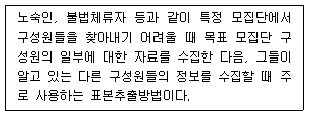
- 할당표본추출
- 눈덩이표본추출
- 계통표본추출
- 단순무작위표집
(정답률: 알수없음)
3과목: 고급통계처리및분석
61. 확률표본 X1,...,Xn은 모평균을
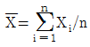
으로 추정량을 제시할 수 있다. 의 표준오차(
의 표준오차(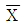
의 표준편차)를 추정하고자 할 때 적절한 추정량은?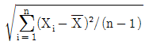
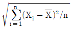
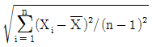
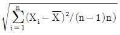
(정답률: 알수없음)
62. 4개 회사에서 판매하는 자동차의 매출액에 차이가 있는지를 알아보기 위하여 각 회사별로 5개의 대리점을 조사한 결과 총변동의 제곱합이 1560 이고, 처리에 의한 변동의 제곱합이 520 일 때 평균 오차제곱합은?
- 50.0
- 55.0
- 60.0
- 65.0
(정답률: 알수없음)
63. 4 종류 휘발유 (A,B,C,D) 의 연료효율에 대한 실험자료의 분석내용이 표에 분석되어 있다. 4 명의 운전자 (갑, 을, 병, 정)와 4 종류의 자동차 (가,나,다,라)를 대상으로 실험하고자 한다. 최소 실험횟수를 통해서 연료효율의 차이를 검정하는 통계 실험에 대한 설명이다. 다음 중 맞는 설명은? (단, 유의수준 5%에서 F(3,6)=4.76 이다.)
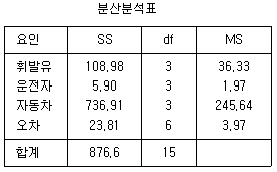
- 운전자와 휘발유의 연료 효율에 대한 영향은 통계적으로 유의하지 않다.
- 자동차 유형과 휘발유 종류간의 상호효과도 통계적으로 유의할 것이다.
- 자동차 유형만이 연료효율 차이가 통계적으로 유의함을 알 수 있다.
- 휘발유 종류간과 연료 효율차이가 통계적으로 유의하다.
(정답률: 알수없음)
64. 다음은 주성분 방법을 사용하여 얻은 인자분석의 결과이다. 이 결과로부터 인자 F1에 의한 기여율은?
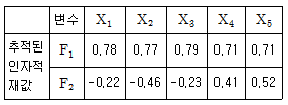
- 0.16
- 0.57
- 0.66
- 0.73
(정답률: 알수없음)
65. 요인분석에서의 Heywood현상에 대한 설명으로 틀린 것은?
- Heywood 현상은 좋지 않은 공통성에 관한 선험(prior) 추측값에 의해 발생한다.
- 요인수가 지나치게 많거나 적을 때 일어난다.
- 안정적인 추정량을 얻기에는 충분하지 못한 자료를 이용하는 경우에 발생한다.
- 최대우도추정법을 이용하면 Heywood 현상을 피할 수 있다.
(정답률: 알수없음)
66. 주어진 확률표본으로 상정된 귀무가설을 기각할 수 있는 최소의 유의수준과 같은 것은?
- 제1종오류를 범할 확률
- 제2종오류를 범할 확률
- 유의확률(p-value)
- 검정력
(정답률: 알수없음)
67. 어느 선거구의 국회의원 선거여론조사에서 특정후보에 대한 지지율을 조사하고자 한다. 지난번의 조사에서 이 후보의 지지율이 45%이었으며 지지율의 95% 추정오차한계가 2.5%이내가 되도록 하는데 필요한 표본의 크기는?
- 1520
- 1522
- 1620
- 1622
(정답률: 알수없음)
68. 어떤 금융기관에서 신용카드 발급 대상자를 분류하기 위하여 정상집단 π1과 연체집단 π2로부터 각각 30개의 자료를 얻었다. 이 자료로부터 계산되어진 각각의 표본평균벡터와 표본공분산행렬이 다음과 같이 주어져 있을 때 피셔의 일차판별함수를 올바르게 구한 것은?
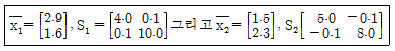
- y=0.311x1-0.078x2
- y=0.412x1-0.108x2
- y=0.523x1-0.231x2
- y=0.142x1-0.349x2
(정답률: 알수없음)
69. 완전확률화계획법(Completely Randomized Design)에 의한 기본 모형 및 가정은 다음과 같다. 위 모형에서 i는 반복수, j는 처리수를 나타낸다. 효과간에 차이가 있는지를 분산분석하고 싶다. 처리(집단간 변동)와 오차(집단내 변동)의 자유도를 각각 구하면?
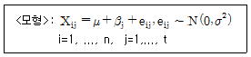
- t-1, t(n-1)
- t-1, n(t-1)
- t-1, nt-1
- t-1, (n-1)(t-1)
(정답률: 알수없음)
70. 이변량 정규 분포를 따르는 변수 (X,Y) 가 평균이 각각 1, 2이고 분산이 1, 1이며 상관계수(correlation coefficient)가 0.5라고 하자. X의 값이 0인 경우의 Y의 조건부 분포는?
- 평균이 2.5 분산이 0.75인 t 분포
- 평균이 1.5 분산이 0.75인 t 분포
- 평균이 2.5 분산이 0.75인 정규분포
- 평균이 1.5 분산이 0.75인 정규분포
(정답률: 알수없음)
71. 새로운 전구를 개발하여 판매하는 회사가 있다. 판매하는 전구 중 36개를 랜덤추출하여 전구의 평균수명을 조사한 결과 평균이 2200, 표준편차가 96일 때 평균수명에 대한 95% 신뢰구간은?
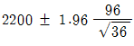
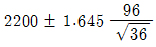
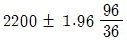
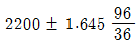
(정답률: 알수없음)
72. 모수적 통계분석방법에서는 상관관계를 나타내는 척도로서 상관계수를 사용한다. 그러나 비모수적인 방법에서는 상관계수의 의미가 약해지므로 상관계수를 나타내는 비모수적 측도를 고려해야만 한다. 비모수적인 방법에서 상관성을 검증하는 방법은?
- 켄달의 타우
- 피트만 검정
- 윌콕슨 순위합검정
- 콜모고로프-스미르노프 검정
(정답률: 알수없음)
73. 두 확률변수 X1,X2의 평균과 분산이 모두 0과 1이고 공분산이 r이라 하면 두 확률변수를 하나의 선형형태인 주성분으로 축약할 경우 이 선형형태로 모든 변이를 잘 설명될 때의 r값은?
- 0 근방
- 0.5 근방
- 1 근방
- -∞ 혹은 ∞ 근방
(정답률: 알수없음)
74. 모수적 검정과 비모수적 검정사이의 관계에 관한 설명으로 옳지 않은 것은?
- 일원배치 ANOVA의 F-검정법과 크루스칼-왈리스 검정은 주로 3개 이상의 위치모수 또는 처리들의 효과를 검정하기 위한 검정방법들 이다.
- 반복이 있는 이원 배치 ANOVA의 F-검정법에 대응하는비모수적 방법에는 프리드만 검정법이 있다.
- 표본의 수가 k인 크루스칼-왈리스 검정에서 검정 통계량은 각 표본의 크기가 5이상일 때는 자유도 (k-1)인 카이제곱 분포에 근사한다.
- 피어슨 상관계수와 같은 역할을 하는 비모수적 방법은 스피어만의 순위상관계수이다.
(정답률: 알수없음)
75. 인터넷 사용의 급속한 성장과 함께 등장한 인터넷 역기능중의 하나가 인터넷 중독이다. A대학교 인터넷 중독센터에서 개발한 인터넷 중독 예방프로그램이 인터넷 중독 예방에 효과가 있는가를 알아보고 싶다. 그래서, A대학교에서는 무작위적(R)으로 두 집단(실험집단, 통제 집단)에 각각 20명씩 배정한 후에 인터넷중독 자가진단검사 결과 (O1,O3)를 얻었다. 실험집단에는 인터넷중독 예방프로그램 6개월 과정(X1)을 교육시켰으며, 통제 집단에 대해서는 실험 집단의 영향이 미치지 않게 실험 집단과 격리시켰으며 교육시키지 않은 상태로 두었다. 6개월 후에 인터넷중독 자가진단검사를 하여 결과(O2,O4)를 얻었다. 위에서 설명한 설계를 기호로 나타내면 다음과 같다. 인터넷중독 예방프로그램이 효과가 있는지를 알 수 있는 올바른 검정 방법은? (단, 사전진단검사와 사후진단검사 간에는 서로 영향을 전혀 미치지 않는다고 가정하자.)
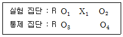
- O1과 O2는 독립 2 표본 T-검정 O3와 O4는 대응 2 표본 T-검정
- O1과 O2는 대응 2 표본 T-검정 O3와 O4는 독립 2 표본 T-검정
- O1과 O3는 독립 2 표본 T-검정 O2와 O4는 독립 2 표본 T-검정
- O1과 O3는 대응 2 표본 T-검정 O2와 O4는 대응 2 표본 T-검정
(정답률: 알수없음)
76. 다음은 요인분석(factor analysis)에 대한 설명으로 옳지 않은 것은?
- 요인분석은 다변량 자료에서 분석해야할 변수의 개수를 줄여 데이터의 양을 축소시키는 방법이다.
- 요인분석에서 요인이라 함은 관측되지는 않으나 여러 문항들에 걸쳐 내재하고 있는 잠재 구조적 변수를 의미한다.
- 주성분 분석은 변수의 차원을 줄여주는 방법은 아니지만 요인분석과 함께 다변량 자료 분석의 중요한 틀이다.
- 주성분 분석은 어떠한 자료에도 적용할 수 있지만, 요인분석은 상정한 모형이 맞는 경우에만 적용할 수 있다.
(정답률: 알수없음)
77. 회귀분석에서 다중공선성에 대한 설명으로 옳지 않은 것은?
- 다중공선성(multicollinearity)란 잔차항들이 서로 상관되어 있는 것을 의미
- 다중공선성이 존재하면 독립변수에 대해 추정된 회귀계수의 분산과 표준오차가 증가하여 결과적으로 t 값을 떨어트림
- 다중공선성이 존재하는가를 알아보기 위해서는 독립변수들간의 상관관계를 조사
- 분산팽창지수(VIF: variance inflation factor) 검사하여 10 이상이면 다중공선성이 있다고 판단한다.
(정답률: 알수없음)
78. 군집분석은 관측된 개체간의 거리 즉 비유사성을 어떻게 정의하느냐에 따라서 달라진다. 개체 i의 관측이 xi=(xi1,∙∙∙, xip), i=1, ∙∙∙, n 이라고 하자. 두 개체 사이의 거리를 측정할 때 변수간 상관의 방향 및 크기를 고려한 거리는?
- 유클리트(Euclidean) 거리
- 마하라노비스(Mahalanobis) 거리
- 도시블록(city block)거리
- 민코브스키(Minkowski)거리
(정답률: 알수없음)
79. 어떤 회사에 근무하는 컴퓨터 전문인들의 급료의 차이를 알아보기 위하여 다중회귀모형y=β0+β1x1+β2x2+β3x3+ε를 사용하였다. 여기서 설명변수x1은 경력연한, 설명변수 x2는 성별변수로서 남자이면 0, 여자이면 1 그리고 설명 변수x3는 관리직이면 1, 스텝직이면 0이다. 주어진 자료로부터 추정되어진 회귀직선은
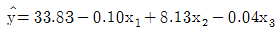
이다. 그러면 관리직인 여자의 추정된 회귀직선은?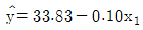
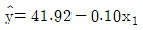
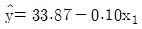
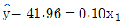
(정답률: 알수없음)
80. 다음의 자료가 구간 (0,1)에서의 균일분포(uniform distribution)를 따르는지를 일표본 콜모고로프-스미노프 검정을 실시할 때 검정통계량의 값은?
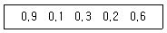
- 0.1
- 0.2
- 0.3
- 0.4
(정답률: 알수없음)
81. 어느 신제품의 선호도를 알아보기 위하여 1,000명의 응답자들을 랜덤하게 추출하여 조사를 실시하였다. 그 결과 700명이 신제품을 선호하는 것으로 나타났다. 선호도에 대한 표준오차의 추정값은?
- 0.7× 0.3/1,000
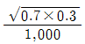
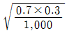
- 0.7× 0.3/700
(정답률: 알수없음)
82. 한국평화당은 보수 집단을 대표하는 정당이다. 한국평화당은 여러 당들의 치열한 이미지 경쟁속에서 생존하기 위하여 국민들에게 더 친근한 정당으로 인식될 수 있는 효과적인 접근 방법을 모색하고 있다. 이 당의 조사 담당부장은 사전 조사로서 자기 당에 우호적인 태도를 보이는 사람과 부정적인 태도를 보이는 사람들을 각각 100명씩 선정하여 연령과 소득을 조사하였다. 조사 결과 얻어진 Fisher의 선형 판별식은 다음과 같다. 이 식은 잘 판별된다고 가정하자.[단위:연령(세), 월소득(만원)] 그렇다면, 새로 입단 원서를 낸 A는 나이 50세, 소득 월100만원, B는 나이 20세, 월소득 200만원이라면, 두 사람은 각각 어떤 집단에 속할까?
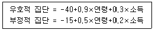
- A=우호적 집단, B=우호적 집단
- A=우호적 집단, B=부정적 집단
- A=부정적 집단, B=우호적 집단
- A=부정적 집단, B=부정적 집단
(정답률: 알수없음)
83. 중선형회귀모형(Multiple Linear regression model)에 대해 회귀 진단 방법으로 진단한 결과 문제가 있는 경우와 해결 방안의 연결이 잘못된 것은?
- 오차항의 이분산성(heteroskedasticity) 발생 - 가중 최소제곱법 또는 변수 변환 사용
- 오차항의 비정규성 발생 - 변수 변환 또는 로버스트(robust) 회귀 방법 사용
- 오차항의 자기 상관 발생 - 변수 변환 또는 편의 추정(biased estimation) 사용
- 회귀함수의 비선형성 발생 - 비선형 모형 설정 또는 변수 변환 사용
(정답률: 알수없음)
84. 어느 지역에서 현 정부에 대한 지지율이 남녀별로 다른지를 알아보기 위하여 남녀 각각 200명씩 조사한 결과 다음의 데이터를 얻었다. 남녀별로 지지율에 차이가 있는지를 검정하면 어느 것인가?
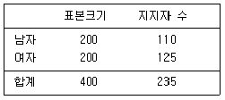
- 유의수준 1%에서 귀무가설을 기각시킨다.
- 유의수준 5%에서 귀무가설을 기각시킨다.
- 유의수준 1%에서는 귀무가설을 기각시키지 못하지만 유의수준 5%에서는 기각시킨다.
- 유의수준 5%에서 귀무가설을 기각시키지 못한다.
(정답률: 알수없음)
85. 어떤 직물의 가공시 처리액의 농도가 직물의 인장강도에 영향을 미치는지의 여부를 조사하기 위해 세가지 농도 A1, A2, A3에서 각각 반복 5회 총 15회를 랜덤하게 처리한 후 인장강도를 측정한 결과가 다음과 같다. 농도에 따른 인장강도에 차가 있는지를 알아보기 위한 F비의 값은?
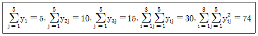
- 12
- 15
- 17
- 20
(정답률: 알수없음)
86. 다음 자료는 A시에서 지난 1997년부터 2003년까지 7년 동안 매월 7월 한달 동안 조사한 삼계탕과 오리탕 값의 자료이다. 스피어만의 순위 상관계수 값은?
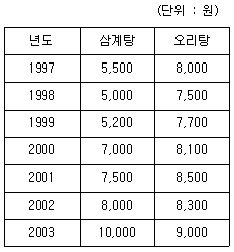
- 0.765
- 0.867
- 0.923
- 0.964
(정답률: 알수없음)
87. 한 정유회사의 휘발유는 소형차인 경우 1ℓ당 15km를 갈수 있다고 공표되어 있으나, 소비자 단체에서는 이 주장이 옳지 않음을 입증하려고 한다. 다음은 5대의 소형차를 랜덤으로 추출하여 측정한 1ℓ당 주행거리이다. 귀무가설 1ℓ당 15km 조건하에서 윌콕슨부호순위 검정통계량은?
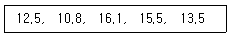
- 2
- 3
- 4
- 5
(정답률: 알수없음)
88. 한국여론 조사회사는 크기 n 의 무작위 표본을 추출하여 다가오는 선거에서 A 후보의 지지율을 추정하고자 한다. 신뢰 수준을 0.99로 하여 실제 지지율이 표본지지율에서 0.0⑤ 이상 오차가 나지 않기를 원한다면 표본의 크기는 얼마로 해야 할 것인가?
- 65,564
- 66,564
- 67,564
- 68,564
(정답률: 알수없음)
89. 연구자가 관찰벡터를 두 모집단 π1과 π2중에서 어디에 분류시킬 것인지 연구하고 있다. 두 모집단에 관련된 밀도함수를 각각 f1(x), f2(x)라 하고, 잘못 분류하여 생기는 비용이 c(2|1)=40원, c(1|2)=70원 임을 알고 있다고 하자. 그리고 모든 관찰대상물 중의 60%가 π1에 속한다는 것을 알고 있다. 이제 새로이 관찰된 x0에서 밀도함수 값이 f1(x0)=0.2, f2(x0)=0.6라고 할 때 이 개체가 π2에서 나왔을 사후확률은?
- 0.55
- 0.33
- 0.67
- 0.84
(정답률: 알수없음)
90. 두대의 전자측정기를 이용하여 9명의 중학생 키를 측정하여 두 기계의 측정치가 차이가 있는지를 검정하는 방법으로 올바른 방법은? (단, 기계별로 측정된 자료는 정규분포를 따른다.)
- 기계1과 기계2의 평균과 분산을 계산하여 정규분포를 이용하여 검정한다.
- 기계1과 기계2의 평균과 분산을 계산하여 T분포를 이용하여 검정한다.
- 기계1과 기계2의 차를 구하고 차의 평균과 분산으로 정규분포를 이용하여 검정한다.
- 기계1과 기계2의 차를 구하고 차의 평균과 분산으로 T분포를 이용하여 검정한다.
(정답률: 알수없음)
91. 같은 종류의 강판을 제조하는 두 대의 기계가 있다. 각각의 기계가 만들어 내는 강판의 두께는 정규분포를 따른다고 하자. 이 두 대의 기계가 제조하는 강판을 표본으로하여 어느 기계가 강판의 두께를 일정하게 만드는지 가설검정하기 위해 쓰이는 검정통계량의 분포는?
- 정규분포
- t분포
- 카이제곱분포
- F분포
(정답률: 알수없음)
92. 모비율추정에 필요한 표본의 크기를 구할 때 최대추정오차,
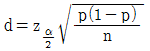
을 n에 대해 정리하면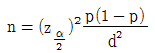
가 된다. 만약 모비율 p에 대한 사전 정보가 없다면 표본의 크기를 구하기 위해 어떤 값을 이용해야 하는가?- p = 0.25
- p = 0.5
- p = 0.75
- p = 1
(정답률: 알수없음)
93. 5개 독립변수를 이용하여 투자성 집단 g1과 투기성 집단 g2으로 판별하기 위해서 적합한 로지스틱 판별함수가 아래와 같다고 가정한다. 다음 설명 중에서 맞는 것은?
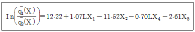
 이므로 LX1을 제외한 다른 독립들이 일정한 수준을 유지할 때 사후확률의 승산 (odds)은 exp (1.07) = 2.92 이다.
이므로 LX1을 제외한 다른 독립들이 일정한 수준을 유지할 때 사후확률의 승산 (odds)은 exp (1.07) = 2.92 이다.- 두 집단을 판별하는 데 상대적인 영향력이 큰 독립 변수는 X2이다.
- LX1이 한단위 증가할 때 투기성 집단에 속할 사후 확률보다 투자성 집단에 속할 사후확률이 1.07배이다.
- 판별함수에 포함된 4개 독립변수들의 측정단위가 서로 다를지라도 상대적인 영향력 크기의 비교 분석에는 변함없다.
(정답률: 알수없음)
94. 세 변수 X, Y, Z 간에 다음과 같은 상관관계가 존재한다고 하자. 이 때 X 의 선형효과를 제거(adjust)한 후의 두 변수 Y와 Z 의 편상관계수는?
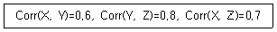
- 0.57
- 0.67
- 0.77
- 0.87
(정답률: 알수없음)
95. 실험계획법에서 분산분석시 이에 대한 설명으로 틀린 것은?
- 난귀법(randomized block design)에서 변량인자(random factor)는 오차와는 독립일 필요는 없다.
- 모수인자(fixed factor)는 선정된 수준이므로 확률변수는 아니다.
- 분산분석시 오차는 정규성을 만족해야 한다.
- 모수인자의 처리효과들의 합은 0이다.
(정답률: 알수없음)
96. x 에 대한 y 의 회귀방정식이 y=5+0.4x라 할 때 x 와 y의 표준편차가 각각 3, 2라면 표본상관계수의 값은?
- 0.9
- 0.6
- 0.5
- 0.4
(정답률: 알수없음)
97. A, B 두 맥주에 대하여 시음전문가 6명에게 맛을 보게 한 다음, 맛을 점수로 나타내어 다음의 데이터를 얻었다. 얻어진 점수는 정규분포를 가정할 수 없다고 한다. 두 맥주의 맛에 차이가 있다고 할 수 있는가를 검정하고자 할 때, 가장 적합한 가설검정 방법은?
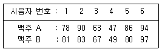
- 독립인 두 모집단의 t-검정
- 윌콕슨 순위합 검정법
- 윌콕슨 부호순위검정법(각 쌍에서의 관측값 차에 적용)
- 앤서리-브레들리 검정(Ansari-Bradley test)
(정답률: 알수없음)
98. 어느 대학병원의 금주교실에서 상습 알코올중독자 5명을 대상으로 알코올 중독이 가정과 자녀에 미치는 영향이 어떤지에 대한 교육을 실시하였다. 이 프로그램을 하기 전과 후에 상습 알코올 중독자들의 알코올에 대한 이해도가 다음과 같이 측정되었다. 이 금주프로그램 참가 후에 알코올에 대한 이해도가 증가되었는지를 알아보기 위하여 부호검정을 한다고 할 때 검정통계량의 값은? (단, 부호검정을 할 때 부호의 기준은 X > Y 이다.)
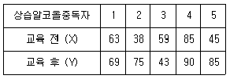
- 1
- 2
- 3
- 5
(정답률: 알수없음)
99. 가설검정에 대한 설명으로 옳은 것은?
- 귀무가설은 연구가설로서 새로운 주장을 의미한다.
- 유의수준이란 일어날 가능성이 희박하다고 생각되는 확률수준으로 귀무가설을 기각하는 기준이 된다.
- 양측검정에서는 기각역이 양쪽으로 나누어져 검정통계량이 너무 크거나 작은 경우 대립가설을 기각하게 될 것이다.
- 유의수준은 대립가설이 참인데도 이를 잘못 기각하는 오류를 저지를 확률의 최소값이다.
(정답률: 알수없음)
100. 랜덤하게 선택된 10명의 A초등학교 신입생에게 심리검사를 실시한 결과 책임감에 대한 득점이 다음과 같이 나타났다. A초등학교 신입생들의 심리 검사에서 책임감의 점수는 80점 이상이 되는지를 검정하고 싶을 때 사용할 수 있는 비모수 검정법은?
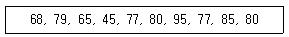
- 모제스 검정(Moses test)
- 덕섬 검정법(Docksum test)
- 홀랜더 검정(Hollander test)
- 부호검정(sign test)
(정답률: 알수없음)